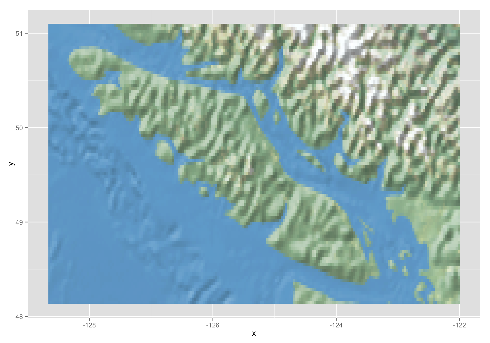
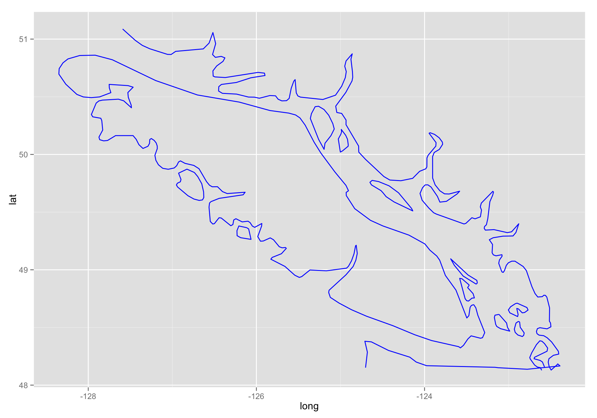
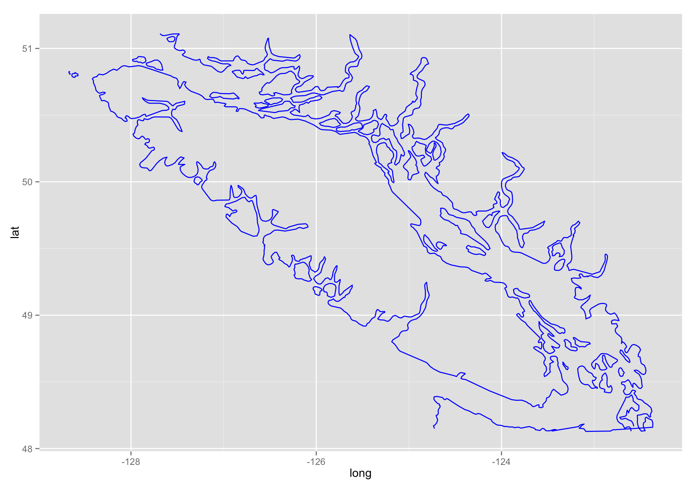
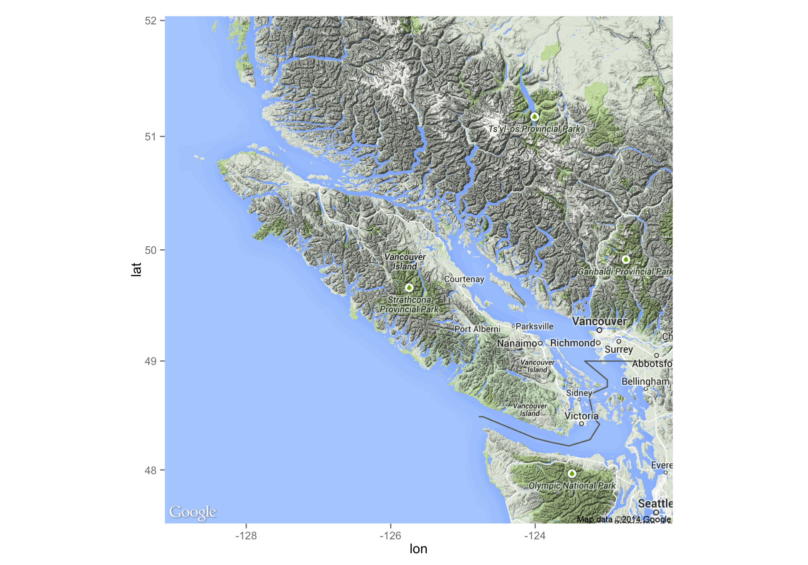

Using Natural Earth Data with ggplot
Intro
Found a blog post at http://downwithtime.wordpress.com/2013/12/04/naturalearthdata-and-r-in-ggplot2/ that had some stuff about it.
Going to try to follow it.
Install rgdal
This apparently needs gdal. So try this:
2014-12-07 21:33 /~/--% brew install gdal
Error: You must `brew link libpng' before gdal can be installed
2014-12-07 21:33 /~/--% brew link libpng
Linking /usr/local/Cellar/libpng/1.6.10... 18 symlinks created
2014-12-07 21:33 /~/--% brew install gdal
==> Installing dependencies for gdal: jpeg, giflib, libtiff, lzlib, proj,
==> Installing gdal dependency: jpeg
==> Downloading https://downloads.sf.net/project/machomebrew/Bottles/jpeg-8d.mav
######################################################################## 100.0%
[...]That installs a boatload of dependencies. However, the build failed because it couldn’t find libjpeg.
So, I tried brew intalling it and got this:
2014-12-07 21:35 /~/--% brew link libjpeg
Linking /usr/local/Cellar/jpeg/8d...
Error: Could not symlink bin/wrjpgcom
Target /usr/local/bin/wrjpgcom
already exists. You may want to remove it:
rm /usr/local/bin/wrjpgcom
To force the link and overwrite all conflicting files:
brew link --overwrite jpeg
To list all files that would be deleted:
brew link --overwrite --dry-run jpeg
2014-12-07 21:36 /~/--% brew link --overwrite --dry-run jpeg
Would remove:
/usr/local/bin/wrjpgcom
/usr/local/bin/rdjpgcom
/usr/local/bin/jpegtran
/usr/local/bin/djpeg
/usr/local/bin/cjpeg
/usr/local/include/jpeglib.h
/usr/local/include/jmorecfg.h
/usr/local/include/jerror.h
/usr/local/include/jconfig.h
/usr/local/lib/libjpeg.aSo I tried it
brew link --overwrite jpegThen a quick
install.packages("rgdal", type = "source")did it for me.
Great.
Getting on with it:
Load libraries
library(raster)
#> Warning: package 'raster' was built under R version 3.1.1
#> Loading required package: sp
library(rgdal)
#> rgdal: version: 0.9-1, (SVN revision 518)
#> Geospatial Data Abstraction Library extensions to R successfully loaded
#> Loaded GDAL runtime: GDAL 1.11.0, released 2014/04/16
#> Path to GDAL shared files: /usr/local/Cellar/gdal/1.11.0/share/gdal
#> Loaded PROJ.4 runtime: Rel. 4.8.0, 6 March 2012, [PJ_VERSION: 480]
#> Path to PROJ.4 shared files: (autodetected)
library(ggplot2)
library(reshape2)
library(plyr)Download Natural Earth Data
I grabbed the NE2 stuff at 1:50 with water from a download button at: http://www.naturalearthdata.com/downloads/50m-raster-data/50m-natural-earth-2/ I downloaded the “small size” which was 83 Mb.
I just got the rasters for now and put them into /Users/eriq/Maps/NE2_50M_SR_W/
Just do the base raster layer
# load raster stack
nat.earth <- stack('~/Maps/NE2_50M_SR_W/NE2_50M_SR_W.tif')
# I am sure this could be done faster with dplyr, now
# but this is how the guy did it:
# I have a domain I'm interested in, but there's no reason you can't define something else:
quick.subset <- function(x, longlat){
# longlat should be a vector of four values: c(xmin, xmax, ymin, ymax)
x@data$id <- rownames(x@data)
x.f = fortify(x, region="id")
x.join = join(x.f, x@data, by="id")
x.subset <- subset(x.join, x.join$long > longlat[1] & x.join$long < longlat[2] &
x.join$lat > longlat[3] & x.join$lat < longlat[4])
x.subset
}
# here is the part we want to focus on:
domain <- c(-98.6, -66.1, 36.5, 49.7)
# here he crops the nat earth base layer
nat.crop <- crop(nat.earth, y=extent(domain))
# this must make a data frame out of the raster:
rast.table <- data.frame(xyFromCell(nat.crop, 1:ncell(nat.crop)),
getValues(nat.crop/255))
# this adds color values in there as a single column, using the
# channels that are named NE2_50M_SR_W.{1,2,3}
rast.table$rgb <- with(rast.table, rgb(NE2_50M_SR_W.1,
NE2_50M_SR_W.2,
NE2_50M_SR_W.3,
1))Now, we should be able to plot the base layer:
g1 <- ggplot(data = rast.table, aes(x = x, y = y)) +
geom_tile(fill = rast.table$rgb)That seems to take a very long time. But mostly that is the time it takes for the thing to get rendered to the screen. But I wonder if geom_raster would be faster. It is supposed to more efficient…
g2 <- ggplot(data = rast.table, aes(x = x, y = y)) +
geom_raster(fill = rast.table$rgb)That certainly returns from the function quickly. It might be a little quicker.
I wonder how long it takes to make a png or a jpeg?
ggsave(filename = "ne.png", g2)
#> Saving 10 x 7 in imageggsave(filename = "ne.jpg", g2)
#> Saving 10 x 7 in imageNow, do another part of the world:
I am going to do a bit of BC:
# note extent has to be given as min/max for long then lat
domain <- c(-128.673958, -122.016243, 48.126320, 51.114388)
nat.crop <- crop(nat.earth, y=extent(domain))
rast.table <- data.frame(xyFromCell(nat.crop, 1:ncell(nat.crop)),
getValues(nat.crop/255))
rast.table$rgb <- with(rast.table, rgb(NE2_50M_SR_W.1,
NE2_50M_SR_W.2,
NE2_50M_SR_W.3,
1))bc1 <- ggplot(data = rast.table, aes(x = x, y = y)) +
geom_raster(fill = rast.table$rgb)
bc1
Wow! That is totally unsuitable!! So, this is a very coarse resolution map.
but the 1:10 couldn’t be that much better. Did I downscale stuff when I made our big map.
Try just the coastline
# note that it apparently does not do tilde expansion on the path
ne_coast <- readOGR(dsn = "/Users/eriq/Maps/NaturalEarth", layer = "ne_50m_coastline")
#> OGR data source with driver: ESRI Shapefile
#> Source: "/Users/eriq/Maps/NaturalEarth", layer: "ne_50m_coastline"
#> with 1428 features and 2 fields
#> Feature type: wkbLineString with 2 dimensions
coast.subset <- quick.subset(ne_coast, domain)The try to plot it:
ggplot() + geom_path(data=coast.subset, aes(x = long, y = lat, group = group), color = 'blue')
Boy! That is intended for very zoomed out things.
What if I do the 1:10 verion?
# note that it apparently does not do tilde expansion on the path
ne_coast <- readOGR(dsn = "/Users/eriq/Maps/ne_10m_coastline", layer = "ne_10m_coastline")
#> OGR data source with driver: ESRI Shapefile
#> Source: "/Users/eriq/Maps/ne_10m_coastline", layer: "ne_10m_coastline"
#> with 4132 features and 2 fields
#> Feature type: wkbLineString with 2 dimensions
coast.subset <- quick.subset(ne_coast, domain)And here we plot it:
ggplot() + geom_path(data=coast.subset, aes(x = long, y = lat, group = group), color = 'blue')
What if you use ggmap
Check this out:
library(ggmap)
vi <- get_map("Vancouver Island", zoom = 7)
#> Map from URL : http://maps.googleapis.com/maps/api/staticmap?center=Vancouver+Island&zoom=7&size=640x640&scale=2&maptype=terrain&language=en-EN&sensor=false
#> Information from URL : http://maps.googleapis.com/maps/api/geocode/json?address=Vancouver+Island&sensor=false
ggmap(vi) And if you save that as a jpg or png you can zoom in even further. I don’t think that Natural Earth data can hold a candle to that.
comments powered by Disqus